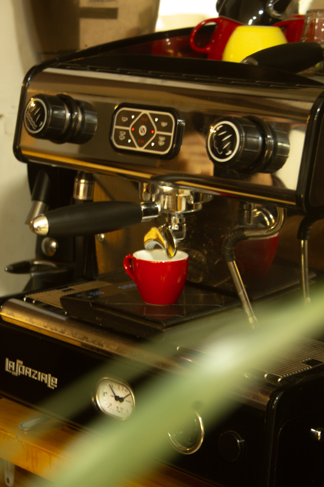
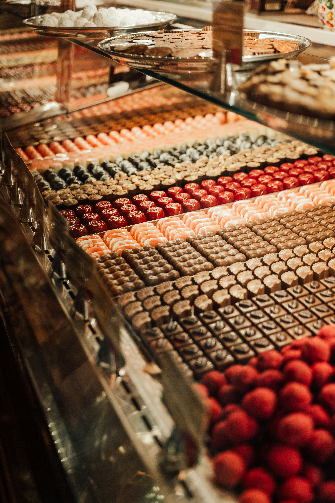
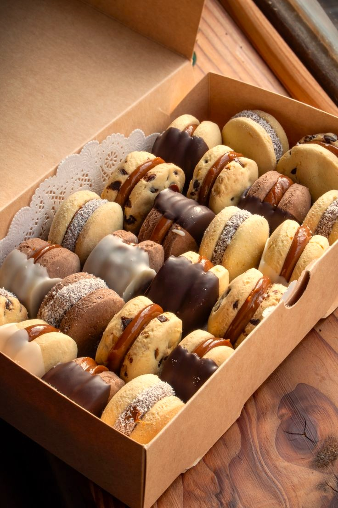
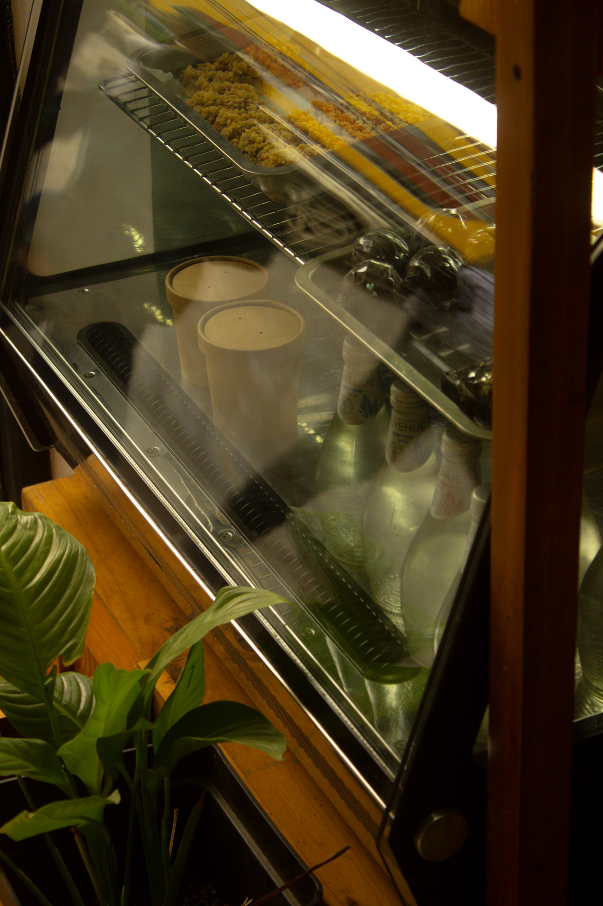
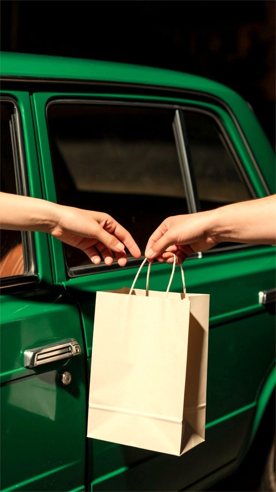
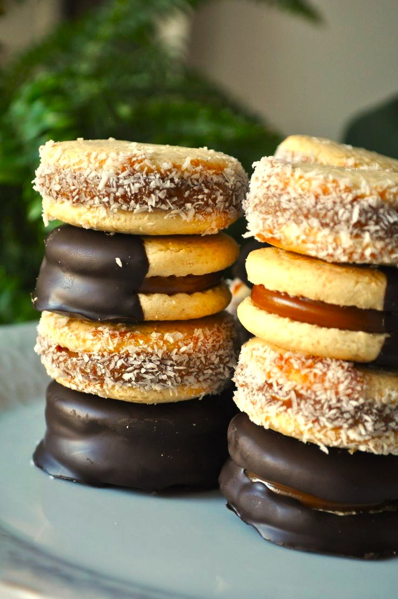

Cafeteria y teteria
Tenemos una cafetería de autor y una tetería completa, ideales para disfrutar buenos momentos junto a nuestras dulces tentaciones. Obvio que también puedes traer tus propios mates para compartir
Chocolateria artesanal de la abuela

Tenemos una cafetería de autor y una tetería completa, ideales para disfrutar buenos momentos junto a nuestras dulces tentaciones. Obvio que también puedes traer tus propios mates para compartir

Desde chocolates rellenos hasta combinaciones con frutos secos, cada creacion nace de los recuerdos y relatos de nuestra abuela, transformando cada sabor en una historia.

Desde clásicos alfajores de maicena rellenos de dulce de leche, hasta alfajores de galleta con una variedad de sabores, cada preparación nace del recetario de nuestra abuela. Creaciones únicas en la zona, que rescatan la tradición y la transforman en una experiencia auténtica.
“Sabores que hablan” nace del amor de nuestra abuela, la señora Joba San Martín, quien siempre expresó su cariño hacia hijos y nietos no solo a través de gestos, sino también mediante exquisitas preparaciones que acompañaban los mates en familia. Con el tiempo, estas delicias comenzaron a destacar en cada encuentro, despertando el deseo de quienes estaban más allá de nuestro círculo cercano. Fue así como surgió la necesidad de compartir este amor con más personas, dando origen a “Sabores que hablan”. Ofrecemos chocolates artesanales con variedades de frutos secos, alfajores con rellenos únicos y una tetería junto a una cafetería de autor, pensadas para generar una experiencia cálida y memorable. Cada receta, cada ingrediente, está inspirado en recuerdos y sabores que nos conectan con nuestra abuela, permitiendo que, a través de cada uno de estos sabores ella siga hablándonos.

Poseemos un stock diario establecido de productos, por lo que si deseas hacer un pedido masivo no podremos suplir tu necesidad sin aviso previo.

Nuestro horario de retiro y delivery es de 9am a 6pm, de lunes a sabados. Por lo que te recordamos tener conciencia de ello.

¿Estás planeando una celebración, un detalle para la oficina o un evento de fin de semana? Haz tu pedido con 24 a 48 horas de anticipación para asegurarte de que todo esté caliente, perfecto y a tiempo.
Aquí podrás ver lo que nuestros clientes dicen de nosotros.
En el jardín de la vida, algunas cosas son simplemente muy dulces. Esta es una de ellas.
Cliente frecuente
Los mates me quedaron en segundo plano con tremendos alfajores. El dulce de leche que usan es de lo mejorrrrrr.
Clienta feliz
Un maravilloso evento donde regalamos a nuestros profesores estos deliciosos chocolates artesanales. Muchas gracias por su increíble atención y servicio.
Colegio Municipal de SanM